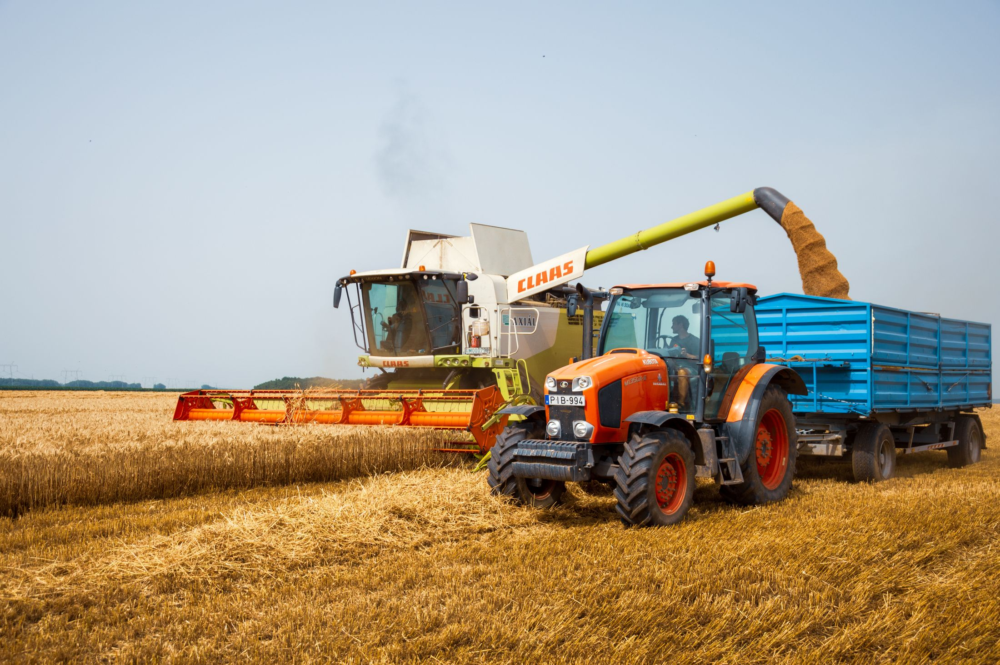
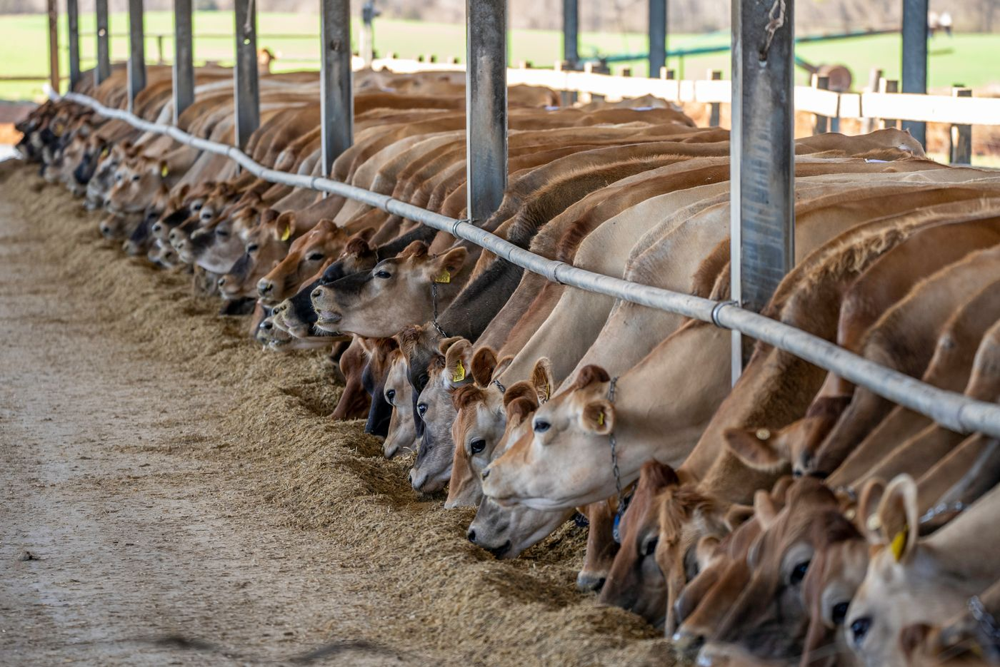
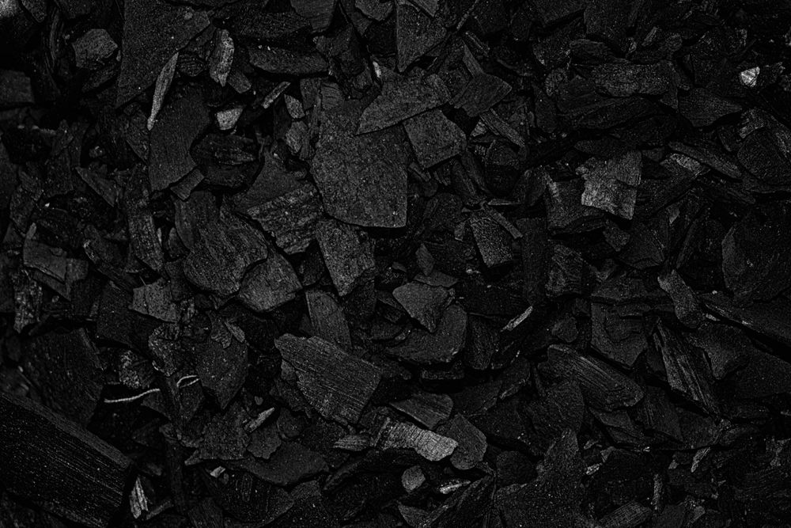
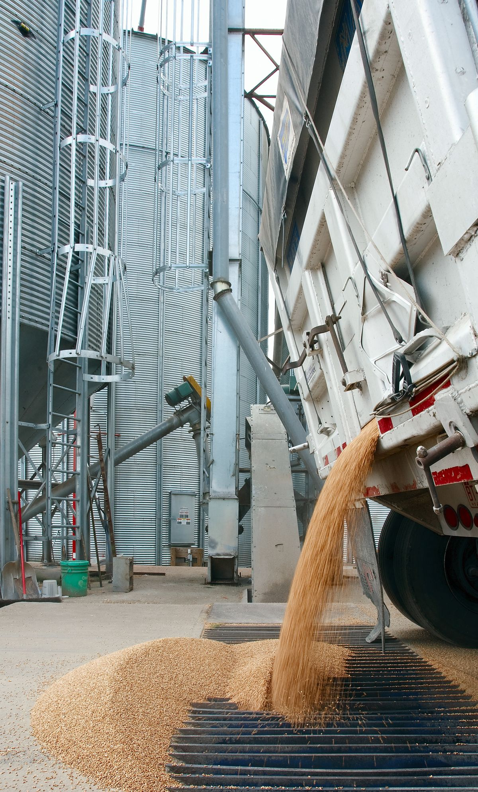

Zboża i rośliny oleiste
Skup i sprzedaż
Pszenica, pszenżyto, żyto, jęczmień, kukurydza sucha i mokra, rzepak, soja i słonecznik. Kupujemy prosto z pola i z magazynów gospodarstw, sprzedajemy do młynów, mieszalni i zakładów tłuszczowych.

Kupujemy i sprzedajemy płody rolne, śrutę sojową i rzepakową, węgiel oraz wapno. Materiały sypkie wozimy wywrotkami - odbierzemy towar z gospodarstwa.
Aktualizacja:
Przykładowe ceny w wizualizacji. W gotowej stronie wpisuje je Pan sam w panelu.
| Produkt | Wymagania | Cena netto | Zmiana |
|---|---|---|---|
| Pszenica konsumpcyjna | białko min. 12,5%, wilg. do 14,5% | 860 zł/t | +15 |
| Pszenica paszowa | wilg. do 14,5% | 790 zł/t | +10 |
| Pszenżyto | wilg. do 14,5% | 720 zł/t | bez zmian |
| Żyto | wilg. do 14,5% | 640 zł/t | -10 |
| Jęczmień paszowy | wilg. do 14,5% | 730 zł/t | bez zmian |
| Kukurydza sucha | wilg. do 14,5% | 780 zł/t | +20 |
| Kukurydza mokra | cena bazowa przy wilg. 30% | 560 zł/t | +15 |
| Rzepak | wilg. do 9%, zanieczyszczenia do 2% | 2 080 zł/t | +30 |
| Soja | wilg. do 14% | 1 680 zł/t | -20 |
| Słonecznik | wilg. do 9% | 1 750 zł/t | bez zmian |
Ceny są orientacyjne. Ostateczna kwota zależy od parametrów ziarna, ilości i miejsca odbioru. Zadzwoń, podamy cenę dla Twojej partii.
Przykładowe wpisy. Dodaje je Pan sam, np. o ruszeniu żniw albo koszeniu kukurydzy.
Przyjmujemy kukurydzę suchą (wilgotność do 14,5%) i mokrą (cena bazowa przy wilgotności 30%). Przy większych ilościach odbieramy ziarno z gospodarstwa własnymi wywrotkami. Wilgotność sprawdzamy przy załadunku, cenę potwierdzamy przed odbiorem.
Kto chce sprzedać rzepak jeszcze w tym miesiącu, niech zadzwoni do piątku. Wrzesień ustalamy na bieżąco.
W czasie żniw przyjmujemy zboże od poniedziałku do soboty. Przed przyjazdem prosimy o telefon, żeby nie czekać w kolejce.
Handlujemy z gospodarstwami, wytwórniami pasz i firmami. Partie od kilku do kilkuset ton.
Skup i sprzedaż
Pszenica, pszenżyto, żyto, jęczmień, kukurydza sucha i mokra, rzepak, soja i słonecznik. Kupujemy prosto z pola i z magazynów gospodarstw, sprzedajemy do młynów, mieszalni i zakładów tłuszczowych.

Sprzedaż
Śruta sojowa i śruta rzepakowa dla gospodarstw z bydłem i trzodą oraz dla wytwórni pasz. Dowozimy luzem wywrotką prosto do magazynu albo silosu.

Sprzedaż
Węgiel na opał dla domów i gospodarstw oraz wapno nawozowe do odkwaszania gleby. Cenę i termin dostawy podajemy przez telefon, zależnie od ilości i odległości.
Wozimy materiały sypkie zestawami typu wywrotka: zboże, kukurydzę, śrutę, węgiel i wapno. Odbieramy towar z gospodarstwa przy skupie i dowozimy go klientom przy sprzedaży.
Transport zlecają nam też firmy i rolnicy, którzy potrzebują przewieźć własny towar. Wystarczy podać, co, ile ton i skąd dokąd.
Zamów transportNajszybciej przez telefon: 516 981 781

Jacek Rosiński